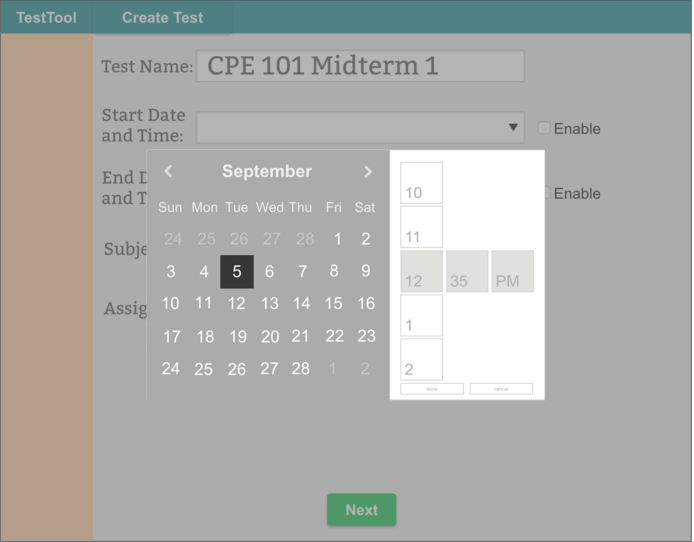

Figure 1: New Test Options
To create a new exam, the user clicks on the "Create New Test" button that is
on the "View Tests" screen, or clicks "Make Test"
on the "Question Bank" screen. Figure 1 is
displayed and allows the user to choose initial options for the exam.
"Test Name" is the name of the exam displayed to test
takers.
Start and end time makes the test available at the specified times.
The option to disable the start and end time is available for the test creator. If disabled, the test is manually enabled or
disabled in the "View
Tests" section.
The test is assigned to all students taking a course, a specific
section of a course, or a list of students. Clicking the "Assign To" option brings up the dialog in Figure 3.
The checkboxes in Figure 1 allows the test to be customized according
to the description in the checkbox label.
To save all of the options for this test and move on to adding or generating
questions, the user clicks on the "Create Test and Add Questions"
button.

Figure 2: Time and Date Picker
Figure 2 is a time and date picker is displayed when the user clicks on either "Start Date and Time" or "End Date and Time". This brings up a drop down menu that overlays Figure 1. After selecting date, time and clicking done, the date and time values are populated in the text boxes shown above.

Figure 3: Assign To Picker